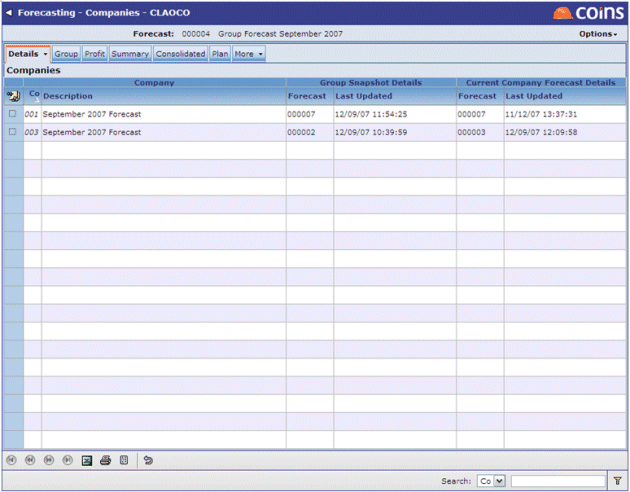

Forecast Detail - The Forecast Detail view displays the header details entered when the forecast was created. To amend the screen, use
 on the bottom-left.
on the bottom-left.Details - This area is used to set the parameters for the forecast. Within the Details menu, the currently selected option is surrounded with an orange outline.
Forecast Detail - The Forecast Detail view displays the header details entered when the forecast was created. To amend the screen, use on the bottom-left.

The